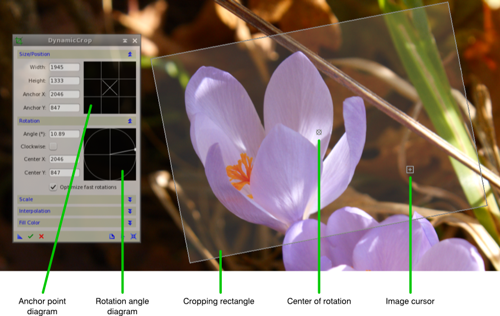
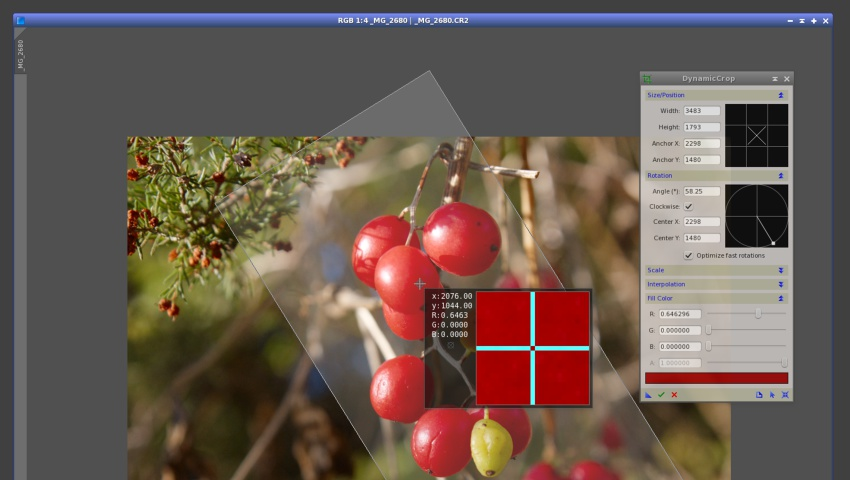

Interactive tool to crop, rotate and scale images. [more]
Categories: Geometry
Keywords: cropping, rotation, scaling
[hide]
[hide]
DynamicCrop is an interactive tool to crop, rotate and scale images. You can define a cropping rectangle directly over the image using the mouse and other pointing devices, or change the position and dimensions of the cropping area by entering numeric values directly with dedicated controls on the DynamicCrop interface.
The tool allows you to move and rotate the cropping area, as well as to change its dimensions by dragging any of its edges or vertices. The final cropped and/or rotated image can be scaled by specifying width and heigth scaling factors, or fixed dimensions in pixels. When the cropped image has to be rotated or scaled, DynamicCrop makes use of pixel interpolation algorithms to generate the output image. DynamicCrop also allows you to define a filling color used when the cropping area exceeds the image margins.
As most geometric processes in PixInsight, DynamicCrop can only be executed on main views (whole images), not on previews.
[hide]
To start a DynamicCrop session, double-click the corresponding entry on the Process Explorer window, under the Geometry category; this will show and activate the DynamicCrop interface, and will put PixInsight's workspace in Dynamic Operation mode. Click on the target image and drag the mouse cursor to define an initial, unrotated cropping rectangle. Once you release the mouse, the DynamicCrop window becomes active and fully operational. The following figure shows the main graphical elements of a DynamicCrop session.
You can edit DynamicCrop parameters by entering their numeric values literally, but most of the time you'll be defining a cropping area on the image with the mouse or other pointing devices. To use DynamicCrop interactively, you can perform the following actions:
Watch the mouse cursor: its shape changes to give you feedback about the actions available as a function of the current cursor position over the image. The cursor shape provides important information about the position and orientation of the final cropped image. When the cursor is over one side or corner of the cropping rectangle, a square spot is shown to indicate the position of that side or corner in the output image. The table below illustrates this behavior:
This section allows you to read and change the cropping rectangle's position and dimensions. The cropping rectangle has an associated anchor point which allows reading and changing its position over the target image at nine different locations. The anchor point is represented on a sort of Tic-tac-toe with three rows and three columns, which we call anchor point diagram. A cross in one of the nine boxes available on the diagram indicates the current location of the anchor point on the cropping rectangle. For instance, when the cross is in the center box of the diagram, the anchor point is located at the rectangle's center.
Each of the nine boxes in the anchor point diagram can also be used to move the cropping rectangle to the corresponding position over the image, or to move the center of rotation to the same position. Here are the keyboard and mouse actions that can be performed on the anchor diagram:
Width and Heigth
These controls allow you to enter the dimensions of the cropping rectangle directly in pixels.
Anchor X and Anchor Y
These controls display the position in pixels of the current anchor point on the target image. You can edit their numeric values to move the cropping rectangle to the corresponding location on the image. For example, to locate the cropping rectangle at the top left corner of the image, set the current anchor point at the top left box of the anchor point diagram by clicking it, and enter zero as the values of these two controls. Alternatively, you can just Shift+double-click on the top left box of the anchor point diagram (see the list of actions above).
The cropping rectangle can be rotated by clicking and dragging outside the rectangle on the image, or inside the rotation diagram on the Rotation section of DynamicCrop's interface. This can also be done by editing the Angle control and selecting the rotation direction with the Clockwise checkbox.
Click and drag outside the cropping rectangle to perform a rotation relative to the current rotation center. Use the rotation diagram to rotate the cropping rectangle relative to its geometric center, irrespective of the current center of rotation. The rotation procedure makes use of pixel interpolation algorithms for arbitrary rotations, except in the case of ±90° and 180° rotations when the Optimize fast rotations option is enabled. For detailed information on interpolation algorithms, refer to the Interpolation Algorithms documentation.
Angle
This edit box always displays the current rotation angle referred to the geometric center of the cropping rectangle, irrespective of whether it matches the current center of rotation or not. You can rotate the cropping rectangle by entering values between 0° and 180°. The sense of rotation is determined by the current state of the Clockwise checkbox.
Clockwise
Check this ckeckbox to set a clockwise sense of rotation. A counter-clockwise sense of rotation is applied when the checkbox remains unchecked. When the rotation is performed by clicking and dragging outside the cropping rectangle (on the image) or inside the rotation diagram (on the DynamicCrop interface), this checkbox is automatically checked or unchecked, depending on the rotated rectangle position.
Center X and Center Y
The position of the center of rotation is determined by these two edit boxes. Center X and Center Y follow Anchor X and Anchor Y when the center of rotation is located at the geometric center of the cropping rectangle and the rectangle is moved. If the center of rotation is located at a different place, it becomes independent on the cropping rectangle, and hence Cener X and Center Y remain unchanged when the cropping rectangle is moved.
Optimize fast rotations
Rotations by 180° and 90° (both clockwise and counter-clockwise) can be implemented without interpolation by just copying and interchanging pixels. These nondestructive rotation algorithms are called fast rotations. By enabling this option, DynamicCrop will use fast rotations instead of pixel interpolations when applicable. This option is enabled by default.
The image area described by the cropping rectangle can be scaled during the cropping operation. This can be done in two ways: by using scale factors, or by specifying the dimensions of the resulting image directly in pixels. The rescaling of the cropping area involves a resampling procedure that uses pixel interpolation algorithms, as described in the Interpolation section.
Scale X and Scale Y
Rescale the cropping area using scale factors whenever you don't have to match exact dimensions in pixels in the cropped image. Scale factors multiply the original dimensions of the cropping rectangle to compute the dimensions of the output image. Using equal scale factors for both axes preserves the aspect ratio of the original image. Differing scale factors will deform the output image with respect to the original. Note that when you change one of these values, the equivalent dimension in pixels is automatically calculated and shown on the corresponding Width or Height control.
Width and Height
These controls allow you to specify the dimensions of the final image directly in pixels. Note that when you change one of these values, the equivalent scale factor is automatically calculated and shown on the corresponding Scale X or Scale Y control. Note also that the values of these controls change automatically when the cropping rectangle is resized.
Pixel interpolation algorithms are necessary to compute output image pixels when the DynamicCrop process rotates and/or scales the cropping area. The exception is when the cropping area is being rotated by ±90° or 180° and the Optimize fast rotations option is enabled (see the Rotation section).
For detailed information on interpolation algorithms, refer to the Interpolation Algorithms documentation.
In this section you can define the color and opacity of the pixels used to fill the areas that fall outside the original image on the output image. These outer areas happen whenever the cropping rectangle lies outside the target image. You can adjust three slider controls corresponding to the individual RGB components, plus one slider for the alpha (opacity) channel. For grayscale monochrome images, only the first slider (R) applies. A rectangular control below the sliders shows a sample of the custom color and its opacity.
You can read the fill color directly from any image by clicking on it in readout mode. This only works when the Fill Color section of the DynamicCrop interface is expanded. The screenshot below shows an example.
Copyright © 2011 Pleiades Astrophoto. All Rights Reserved.